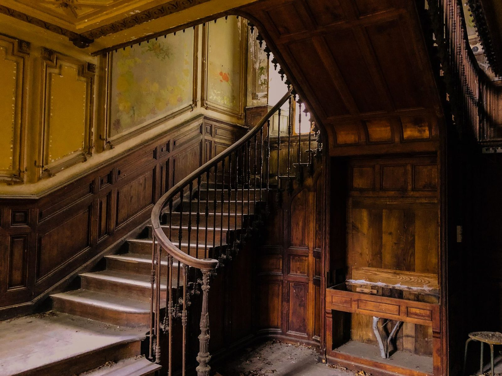

Entry № 2,404 · Merewether
The return stair, rebuilt around its newel
A 1910 staircase saved rather than replaced — every tread template-matched on site, the original newel post cleaned and kept in service.
14 weeks on the bookHeritage approved2024